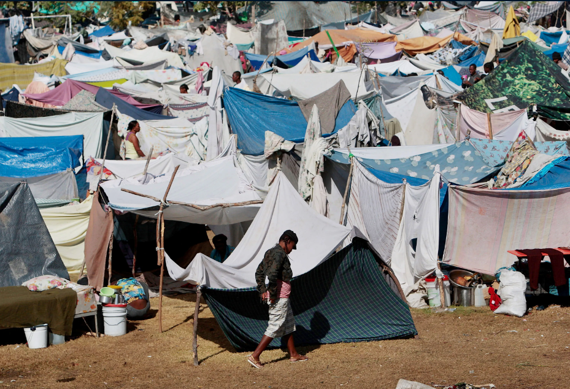
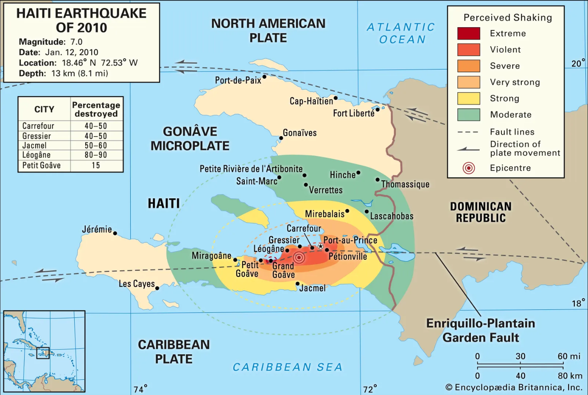
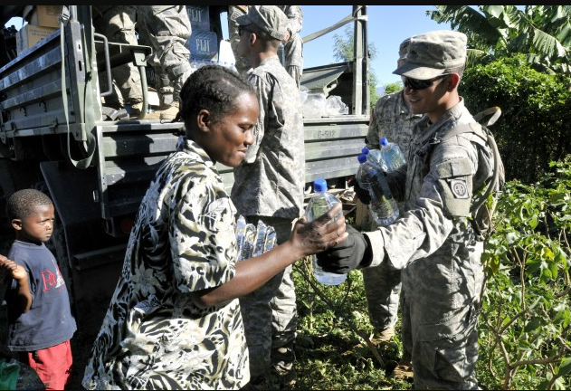

The earthquake resulted in a devastating loss of life and widespread suffering within the nation. There were approximately 220,000 fatalities and more than 300,000 injuries within this disaster. Because of the catastrophic destruction of the earthquake, thousands of people were trapped under rubble. The sheer scale of the disaster quickly overwhelmed the medical and emergency services within Haiti, which rapidly increased the death toll.
(Displacement camps in Haiti)
There were over 1.5 billion people displaced internally within Haiti, the massive destruction lead by the earthquake destroyed a lot of the homes. Many of the homes were built without proper reinforcement which led to a lot of them collapsing. This left a substantial part of Haiti completely homeless.
The Haiti earthquake had a magnitude of 7.0 and struck on January 12, with its epicenter located about 16 miles (25 km) west of Port-au-Prince. The earthquake’s shallow depth amplified the impact, causing significant destruction to infrastructure, buildings, and key facilities. The economic losses were estimated at $8-13 billion, which affected the already the Haitian economy.
(Map of effected areas by earthquake)
Haiti urgently needed widespread humanitarian assistance due to the total collapse of essential infrastructure, including hospitals, roads, and homes. The country’s pre-existing poverty and lack of resources exacerbated the crisis, leaving the government and local organizations unable to provide adequate aid. International help became crucial to address immediate needs such as food, water, medical care, and shelter, while also supporting longer-term recovery and rebuilding efforts.
The US played a dominant role in Haiti’s recovery efforts. The US military also had control over a lot of the critical infrastructure of Haiti such as the Port-au-Prince airport. This airport handled 90% of relief flights because it was the main way most Humanitarian responses could enter the country. Because of the US military's influence on this airport, it caused many issues within the air space that hindered and slowed down humanitarian response significantly from other organizations. Not only that the UN’s peacekeeping forces (MINUSTAH) had around 12,000 troops within Haiti before the earthquake. The combined troops from both the US military and the UNs peacekeeping forces caused a lot of miscommunications that resulted in a lack of any coordination which slowed down humanitarian response. The political dynamics and competing priorities hindered a successful and efficient unified humanitarian aid response.
(US military providing essentials for Haiti)
Relief workers face significant risks, including exposure to trauma, mental health challenges, and physical danger. Many workers experience stress, burnout, and PTSD from witnessing extreme suffering and destruction. Additionally, in unstable environments, there can be risks of disease, violence, and logistical barriers that hinder the safe and effective delivery of aid.
Email: hr@hopebridge.net
Phone: 388-875-0012